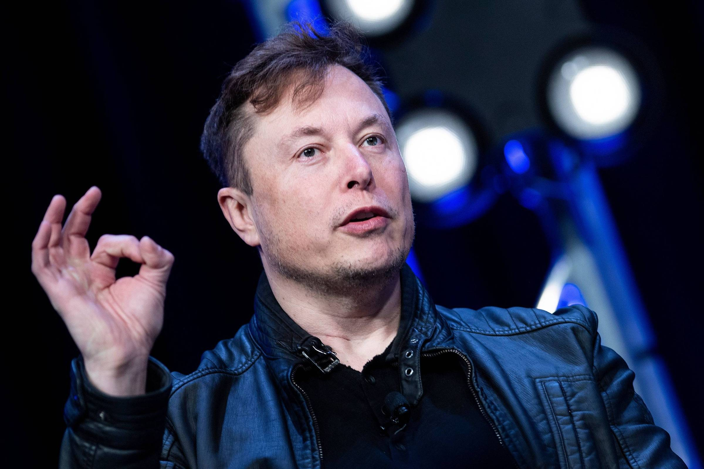
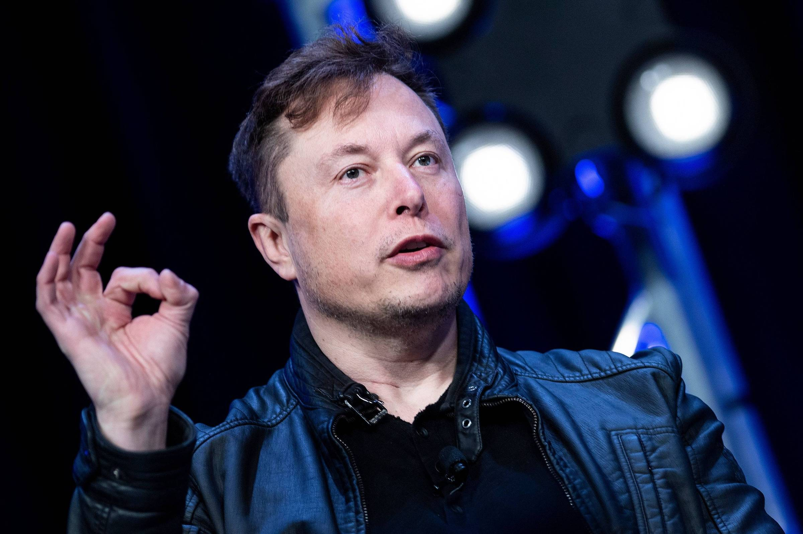

elon Musk é um empreendedor sul-africano (com cidadanias canadense e norte-americana) mundialmente conhecido por fundar e liderar empresas como SpaceX, Tesla, Hyperloop, Neuralink, Startlink, The Boring Company, SolarCity e, anteriormente, o Paypal. Musk é reconehcido dos maiores inventores e empreendedor do século XXI, Uma empresa que desenvolve e produz carros elétricos e baterias, a Tesla Motors é mais um projeto de Musk que pretende dar fim a supremacia do motor a combustão interna e, consequentemente, diminuir os efeitos do aquecimento global. Com foco nos sedans e nos utilitários esportivos, em 2017, se tornou a montadora mais valiosa dos Estados Unidos, ultrapassando gigantes como a General Motors e a Ford, ainda que possua menor número de vendas e presença internacional. A Tesla lançou, em 2018, o primeiro carro elétrico considerado relativamente acessível, o Model 3, por US$ 35 000. Entretanto, a empresa tem mostrado dificuldade em cumprir as metas de produção e, portando, suprir a demanda dos clientes. Elon Musk classificou esse cenário como "production hell". O CEO assumiu a culpa, mas disse que trata-se apenas de um contratempo, causado principalmente por uma tentativa falha de automação quase total das indústrias em que o Model 3 é fabricado. Nesse cenário, a The Economist chegou a noticiar que a Tesla precisaria de um financiamento de US$ 2,5 bilhões para manter suas operações. Musk, porém, afirmou que a empresa se tornará lucrativa ainda em 2018, portanto a análise da revista estaria equivocada.
 
